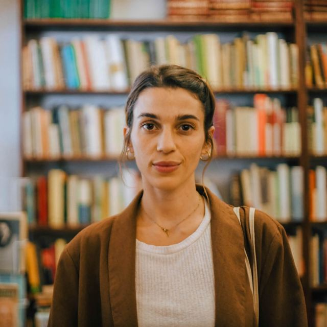

Carla Santángelo
Edición #3 | Líquenes y Hongos
Día 1
Es extraño que llueva durante kilómetros. Seis horas en el auto y no ha parado. Me acostumbré al cambio repentino de Ecuador: lluvia-sol-granizo en poco tiempo.
Confundo las gotas de agua reflejadas por la luz con luciérnagas, como en Guápulo confundo las luciérnagas del jardín con gotas de agua reflejadas por la luz. La lluvia parpadea como insectos en la noche.
¿Qué pasó con las luciérnagas acá?
Llegamos a la casa. Los perros salieron a recibirnos y Panchi, el chico que trabaja acá, nos enseñó a prender el generador eléctrico. Es probable que llueva durante unos días.
Recorremos las habitaciones y rápidamente reconozco mi escritorio: un mueble compacto y viejo con cajones de todos los tamaños. Las obras de las antiguas residentes decoran el espacio. Maia levanta una pequeña escultura rocosa y dice: Hay un mundo bajo las piedras.
Día 2
Ade nos contó que algunas personas jóvenes están regresando a sus lugares de origen en la provincia de Buenos Aires y que traen nuevas prácticas agrícolas. Los cambios son lentos y chiquitos, pero existen. Observo la misma lógica: una constante dicotomía entre la fuerza ecocida y la resistencia soberana.
En el Pastizal hay muy pocos árboles endémicos, anoto el Sauce Criollo. Esta idea de paisaje «desolado» fomentó un avance destructivo sobre el paisaje, como si estuviera vacío. Sin embargo, está lleno, llenísimo de arbustos y criaturas. En lugar de mirar hacia arriba, miro hacia abajo, me agacho, hago foco: la Carqueja se ha llenado de telas de araña.
Por la niebla es imposible ver las sierras, por eso caminamos mirando hacia abajo: las telas de araña se llenaron de gotitas y parecen cristales. Su ingeniería es perfecta y minúscula. El gesto de la construcción fractal: una casa en el aire.
Día 3
Hace días que llueve sin parar. El Pastizal es una esponja para el agua. Quiero ver el sol, pero es mejor este riego lento y suave para la tierra. Una y otra vez aprendo los ciclos naturales: ruego, paciencia, celebración.
Salimos a caminar, aunque el clima sea húmedo. A lo lejos hay cuatro caballos pastando y trato de fijar su imagen en mí a través de los prismáticos. Enfoco, hago fuerza con los ojos para distinguir los movimientos. Su silencio es lo más noble que existe.
Día 4
Dejó de llover. Conté exactamente 22 días sin ver el sol. En Quito hubo tormentas y niebla constantes. Contemplo el reflejo del feldespato en las rocas. A cada hora la luz hace un paisaje nuevo. Mi mapa de hoy es lumínico.
Los cultivos gramíneos y leguminosos se plantan juntos porque «no compiten». La agricultura podría ser un ejercicio de convivencia. Imagino cultivos diversos vistos desde arriba y sonrío por la tierra como una posibilidad constante.
Dice Rodrigo que las lluvias limpiaron el aire que suele estar contaminado por las sustancias tóxicas que se usan en algunos cultivos. ¿Cuánto va a tardar el aire en intoxicarse de vuelta? ¿Cuánto tiempo más puedo vivir esta pureza entrando y saliendo de mi cuerpo?
Día 5
Miramos un mapa de la reserva natural. Maia habla de los árboles que plantó su abuelo, dónde están, cómo podemos encontrarlos si caminamos hacia el dique.
Para imitar los paisajes europeos, se trajeron especies como los pinos. Un árbol tan común en mis siestas de infancia no tendría que crecer aquí, del otro lado del mundo. La nostalgia de algunos cambió la memoria futura del territorio.
Las raíces y los hongos crean relaciones para conseguir alimento. Quisiera asomarme a la microbiología del pastizal como quien se asoma a una ventana. Existe un tejido de respiraciones diminutas en el suelo que pisamos.
Día 6
El fuego es mi guardianía. Coloco cada tronco en su posición, nutro las brasas, soplo con cuidado para que entre oxígeno. Cuando vuelvo a escribir, el cuaderno se llena de ceniza: es la huella de la dedicación.
La escritura es mi intento por materializar eso que quiero proteger, pero no es suficiente. Deseo encontrar la tierra que me llama y no abandonarla. Una errancia sostenida. Quien se va besa las manos de quien se queda para sembrar. Quien se queda cuida el vuelo de quien se ha ido.
«Los árboles estaban llenos de sí mismos», dice A. Kamiya. ¿De qué está lleno el pastizal?
Día 7
Qoa hace infusiones con plantas, Marie rasga las telas en las que imprimió sus fotografías, Robi experimenta con microorganismos y los guarda en frascos. Las tres entran y salen de la casa, cosechan muestras, traen ramilletes de marcela, plumas de Tero, hongos que vinieron con los pinos. ¿De qué está hecha mi recolección? Cosecho palabras y las pongo a secar.
Tomo el tronco ya calcinado y está caliente en su interior. Lleva horas dándonos calor. Tengo cuidado al moverlo, todavía late. No hace falta que algo esté vivo para que tenga un corazón.
Día 8
Dice Marie Bardet que, en lugar de pensar «sobre el cuerpo», hagamos un «cultivo de los gestos» que alimente perspectivas cruzadas entre prácticas culturales, ecológicas y feministas. La palabra que usa me parece hermosa: ecosomática.
Romper la visión binaria del mundo. Respetar los matices.
Escucho una voz en mi interior que señala con la palabra: Suspiro, Barba de piedra, Amanita, Calandria. Reconozco los detalles a mi alrededor, cerca del cuerpo y nunca amo tanto como cuando amo con el cuerpo.
Día 9
Este tiempo en la residencia es nuestro tiempo. ¿Un tiempo anticontemporáneo?
La quietud al escribir, el movimiento subiendo al dique, las manos a los lados para rozar, los ojos cerrados por el sol, la cabeza en alto cuando el hornero hace sus cantos. Cada gesto inventa una memoria a pequeña escala.
Día 10
Paseo con toda la paciencia que desconocía en mí. Podría observar el reflejo del feldespato en las rocas durante una eternidad.
Registro el comportamiento de los chimangos. Su danza cuando salen de los árboles, cantan y regresan al silencio. Me dedico a esperar y tomar notas. Cada día los amo más. Amar también puede ser una práctica desde la lejanía.
Algunas herramientas pasan por mí con asombro infantil. Uso los prismáticos cuando los caballos se alejan y la lupa parar observar las esporas de un hongo. La mirada se construye dándole distintas perspectivas a lo vivo, es decir, la misma importancia.
Día 11
Cuando vuelvo a leer Primavera silenciosa, de Rachel Carson, y me doy cuenta de su actualidad, me toma un miedo tan profundo como la tristeza. ¿Qué pensaría ella si viera la tierra contaminada por los agroquímicos que tanto denunció, las moléculas de toxicidad hundiéndose en la tierra, la biodiversidad menguando tan rápido?
Fuimos a comprar verduras y Marie volvió a preparar su ensalada con coliflor cruda. Cada comida llena la mesa de colores y texturas. Nos acercamos las unas a las otras con las manos, sobre todo con las manos, y es hermoso.
Día 12
Los Teros hacen sus nidos en el suelo. ¿Cómo iba a ser de otra forma si no existían apenas árboles acá? ¿Cómo cambiaron sus comportamientos el resto de las aves? Hay preguntas que no me dedico a responder, sólo dejo que me inunden.
He dejado de registrar mis sueños, como si hubiesen pasado a un segundo plano: el tiempo onírico en relación al tiempo presente. Intento recordar, pero ya es tarde. El lenguaje de las vacas y de las aves es tan poderoso en este momento de la mañana que no me importa nada más.
Día 13
Preparamos los proyectos y la muestra en el Museo de Pigüé. Las anotaciones del diario son más breves, casi todas contienen nombres de aves que ya reconozco por sus cantos.
La luna salió detrás de las sierras. Amarilla y enorme, parece un sol. Va subiendo y oscurece, brilla y brilla sobre la línea del suelo. Es tan suave la timidez con la que el cielo toca el pastizal que logra otra forma, apenas convexa, como si en el llano pudiera verse la curvatura del mundo.
Día 14
Pronto volveré a casa y quiero retener el tacto de las polveras y sus esporas volando con la pisada de un animal y cómo se mide la edad de un bosque y la historia evolutiva de los líquenes y el micelio y la antigüedad de estas sierras y el entierro de un insecto disecado y el brillo del cielo y el frío nocturno y el crecimiento radial y las cianobacterias y cada persona, cada momento, cada ofrenda.
En el prólogo de las cartas entre Lygia Clark y Hélio Oiticia, Gonzalo Aguilar escribe: «Haciendo del cuerpo un lugar al que regresar».
Aunque las rocas de estas sierran son silíceas, las cuarcitas que las componen tienen su origen en las areniscas. Hace 400 millones de años este paisaje era un litoral. Somos un leve suspiro geológico. Las rocas traen mensajes del pasado. Nosotras escuchamos. El pastizal recuerda.